Release 3.3 Copyright ©1994 by NeXT Computer, Inc. All Rights Reserved.
| 6 | Managing Electronic Mail | |
| Electronic mail allows users to send messages to one another. These messages can include formatted text, images, sounds, and documents. For a network of computers, you need to set up a mail server. Usually, you do this when you configure your network. This chapter explains how to set up a mail server on a NetInfo network, and discusses the resulting changes in the NetInfo databases. |
| Setting Up the Mail Server |
| In general, you use SimpleNetworkStarter to set up the mail server. If you've already done this, you can skip this section. If, on the other hand, you didn't set up a mail server when you created your network, and you now want to configure an existing server as the mail server, you need to follow the steps in this section.
Note: If you have an external hard disk where you would like to store mail messages, set it up and mount it as /usr/spool/mail following the instructions in Chapter 7, "Attaching Peripherals," before continuing.
Adding a Host Alias Mail on a NetInfo network is relayed through a computer identified by the host name mailhost. The computer you've chosen to be the mail server must be recognized as mailhost. Rather than changing the host name of the computer, you add a host alias. |
| 1. | Log into the computer you've chosen to be the mail server, using any valid account. | |
| 2. | Start up HostManager, located in /NextAdmin. If you're not logged in as root, a panel appears stating that you must have superuser status. Enter the root password and click Login. |
| 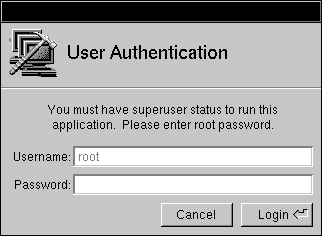 |
| 3. | Choose Open from the Host menu. The Open in NetInfo Domain panel appears. |
|
| 4. | Click / in the upper portion of the panel to select the root domain, then click the host name of the mail server in the bottom portion. Click OK. A host window appears. |
| 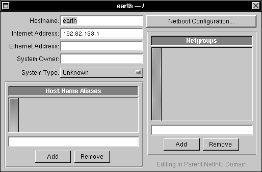 |
| 5. | Click in the text field under the Host Name Aliases list, then enter mailhost. Click the Add button. |
| 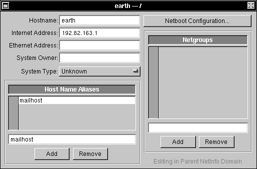 |
| 6. | Save the host entry with the new alias by choosing Save from the Host menu. |
| This computer can now be accessed with the host name mailhost.
Exporting the Mail Directories For network mail to work properly, the mail messages, mail aliases, and mail pictures must all have central, shared locations. When mail messages are sent, they are temporarily stored under the directory /usr/spool/mail until the recipients use NeXTmailTMto load the messages into the mailboxes in their home directories. Mail pictures and aliases are kept in /LocalLibrary/Images/People. You must make sure that both directories exist and are exported to the network: |
| 1. | Start up NFSManager on the mail server. | |
| 2. | Drag the icon for /usr/spool/mail from the File Viewer into the well at the top of the Exported Folders window. If you prefer, you can click the Add button below the well, then use the browser that appears to select /usr/spool/mail. A panel appears asking for the root password of the server. |
 |
| 3. | Enter the root password and click Login. The Exported Directories window shows the added directory. |
| 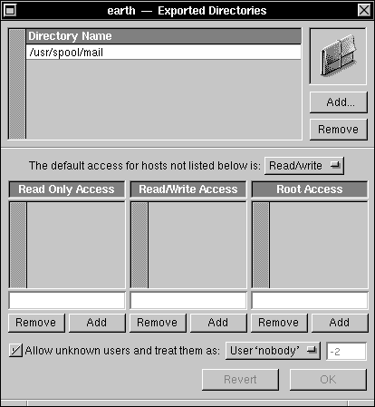 |
| 4. | Create a directory named /LocalLibrary/Images/People with the Workspace Manager. | |
| 5. | Drag the icon for /LocalLibrary/Images/People from the File Viewer to the well in the Exported Directories window of NFSManager. If you prefer, you can click Add, then select the directory in the browser. |
| Importing the Mail Directories
Now you need to make sure that the mail directories are available to all the computers on the network: |
| 1. | Still in NFSManager, choose Import To from the main menu. The Select NetInfo Domain panel appears. |
| 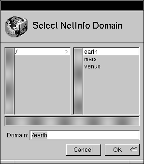 |
| 2. | Click / in the left column, then click OK. A new Imported Directories window appears. Notice the name of the domain in the title bar. |
 |
| 3. | Click Add (make sure you're working in the window for the root domain, and not the window for the local domain). A panel appears. |
| 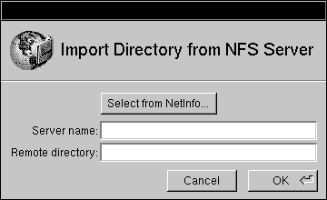 |
| 4. | Enter the host name of the mail server in the "Server name" text field, then /usr/spool/mail in the "Remote directory" field. A panel appears asking for the root password of the domain. |
 |
| 5. | Enter the root password and click Login. The added directory appears in the window. |
| 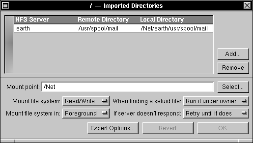 |
| 6. | Edit the "Mount point" field so that it reads /usr/spool/mail. Click OK. |
| 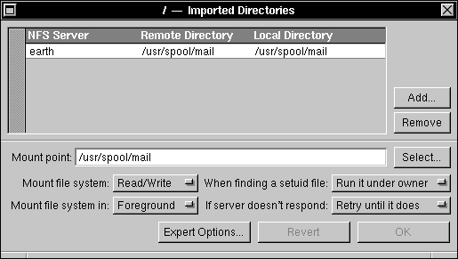 |
| 7. | Click Add. | |
| 8. | In the panel that appears, enter the name of the server into the "Server name" text field and /LocalLibrary/Images/People in the "Remote directory" field. Click OK. | |
| 9. | Edit the "Mount point" field so that it reads /LocalLibrary/Images/People. Click OK. |
| 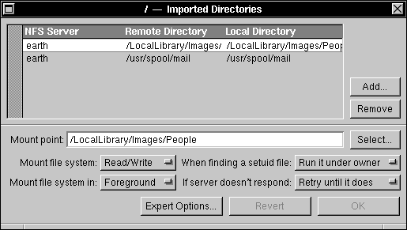 |
| 10. | Quit NFSManager. |
| Modifying the Root Domain /locations Directory
Mail delivery on NeXT computers (and other UNIX systems) is controlled by a sendmail configuration file. Three different configuration files are shipped with NeXT computers, each appropriate for a different situation. In order for mail to work properly, you must have the computers use the correct sendmail configuration file. You do this with NetInfoManager. |
| 1. | Still logged into the mail server, start up NetInfoManager, located in /NextAdmin. | |
| 2. | Choose Open from the Domain menu. The Select NetInfo Domain panel appears. |
 |
| 3. | Select the root domain by clicking / in the left column, followed by clicking OK. | |
| 4. | Click locations in the middle column of the domain window that appears. | |
| 5. | Create a new subdirectory by choosing New Subdirectory from the Domain menu. A new subdirectory named newValue appears in the right column. |
| 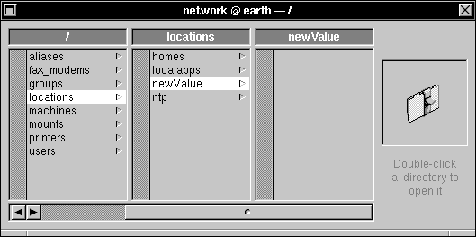 |
| 6. | Double-click newValue to open the Directory window. |
| 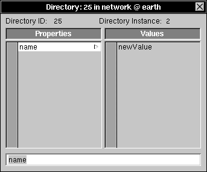 |
| 7. | Click newValue in the Values column. Change this value by entering sendmail and pressing Return. | |
| 8. | Click name in the Properties column, then add a new property by choosing Append Property from the Directory menu. |
| 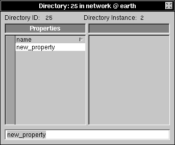 |
| 9. | Change the property key by entering mailhost in the text field and pressing Return. |
| 10. | Choose New Value from the Directory menu to add a new value to this property. | |
| 11. | Click new_value in the Values column, then change it by entering the host name of the mail server and pressing Return. |
| 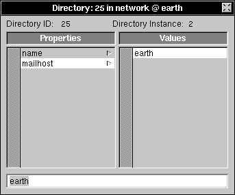 |
| 12. | Click mailhost in the Properties column, and choose Append Property from the Directory menu to add a new property. | |
| 13. | Change the property key by entering sendmail.cf and pressing Return. | |
| 14. | Choose New Value from the Directory menu, then change the value to be /etc/sendmail/sendmail.sharedsubsidiary.cf. | |
| Note: Be careful when entering this file name. A mistake here can cause mail not to work. |
| 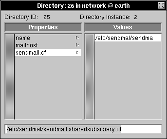 |
| 15. | Save the modified directory by choosing Save from the Directory menu. | |
| 16. | Close the domain window for the root domain. |
| Modifying the Local Domain /locations Directory
With the modifications you've made, all the computers on the network will use sendmail.sharedsubsidiary.cf as their sendmail configuration file. However, the mail server needs to use a different configuration file. To enable this, follow these steps: |
| 1. | Still in NetInfoManager, click the domain window for the local domain. If the window isn't available, use Open from the Domain menu to open the local domain of the mail server. | |
| 2. | Click locations in the domain window. | |
| 3. | Add a new subdirectory by choosing New Subdirectory from the Domain menu. | |
| 4. | Click newValue, then double-click it to open the Directory window. | |
| 5. | Click newValue in the Values column. Change the value of the name property by entering sendmail and pressing Return. | |
| 6. | Click name in the Properties column, then add a new property by choosing Append Property from the Directory menu. | |
| 7. | Change the property key by entering mailhost in the text field and pressing Return. | |
| 8. | Choose New Value from the Directory menu to add a new value to this property. | |
| 9. | Click new_value in the Values column, then change it by entering the host name of the mail server and pressing Return. |
| 10. | Click mailhost in the Properties column, then add a new property by choosing Append Property from the Directory menu. | |
| 11. | Change the property key by entering sendmail.cf in the text field and pressing Return. | |
| 12. | Choose New Value from the Directory menu to add a new value to this property. | |
| 13. | Click new_value in the Values column, then change it to /etc/sendmail/sendmail.mailhost.cf and press Return. | |
| Note: Again, be very careful entering this file name. | ||
| 14. | Save the modified directory by choosing Save from the Directory menu. |
| Because you've put this information in the local domain, the mail server will use the file named here, rather than the one named in the root domain. Remember, NetInfo always looks in the local domain first before searching up the domain hierarchy.
Updating Pictures and Aliases The Addresses panel of the Mail application includes all the user accounts and aliases available for addressing a message. When new users or aliases are added, the aliases database must be updated. This is accomplished with the command /usr/bin/mailDBupdate. To make things even easier, you can modify a file so that the command runs automatically every day: |
| 1. | Log in as root on the mail server. | |
| 2. | Open /etc/crontab.local and add a line like the following to the bottom of the file (if the file doesn't already exist, create it): |
 0 2 * * * root /usr/bin/mailDBupdate
0 2 * * * root /usr/bin/mailDBupdate
| This entry updates aliases and pictures every day at 2:00 am. If you'd like to run the command more frequently, or at a different time, modify the entry appropriately. See the UNIX manual page for cron for details. |
| 3. | Save the file. |
| The aliases database (and mail pictures) will now be updated daily. For more information about mail pictures, see "Adding Pictures for Users" later in this chapter.
Note: If you set up the mail server with SimpleNetworkStarter, the cron scripts will automatically be modified to include this command. |
| Examining the NetInfo Database |
| Setting up a mail server with SimpleNetworkStarter is deceptively easy. Several different activities are performed behind the scenes, including setting up NFS directories and modifying NetInfo databases. The following steps will show you exactly what happened. |
| 1. | Start up the NetInfoManager application to examine the changes that were made to the NetInfo databases. | |
| 2. | Open the root domain by choosing Open from the Domain menu and double-clicking / in the first column of the panel that appears. | |
| 3. | Click /machines in the domain window, and locate the directory with the host name of the mail server. |
| 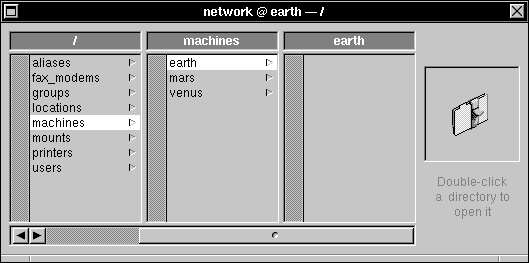 |
| 4. | Double-click this directory to open the Directory window. |
| Note that the name property now has two values: the original host name and mailhost, allowing this host to be identified by either name. The alias mailhost was added by SimpleNetworkStarter when you set up the mail server. Mail clients send mail to the host mailhost to be relayed to their final destination. |
| 5. | Close the Directory window. Locate the directory /locations/sendmail in the root domain window and double-click it to open a different Directory window. |
| 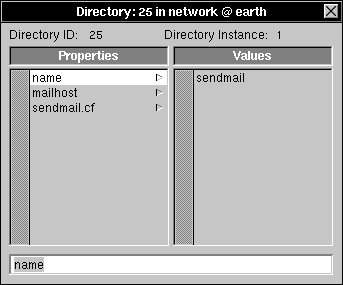 |
| 6. | Click sendmail.cf. Mail delivery is controlled by a sendmail configuration file. The value of this property specifies which configuration file mail clients should use. For mail clients, it's /etc/sendmail/sendmail.sharedsubsidiary.cf. |
| 7. | Click mailhost. The value of this property is the host name of the mail server. |
| 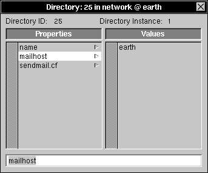 |
| Having a value for the mailhost property of the sendmail directory prevents SimpleNetworkStarter from trying to configure additional mail servers on the same network. |
| 8. | Close the Directory window. | |
| 9. | Click mounts in the root domain window. Notice the subdirectories server:/usr/spool/mail and server:/LocalLibrary/Images/People. |
| 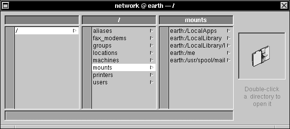 |
| When mail is sent, it's stored temporarily under the directory /usr/spool/mail. Mail aliases and picture are stored in /LocalLibrary/Images/People. These directories must be available across the network for mail to work properly. The mounts subdirectories shown here mount the required mail directories from the mail server onto the clients. On the mail server, which has local access to those files, the mounts are ignored. |
| 10. | Close the root domain window. Choose Open from the Domain window, and open the local domain of the mail server. | |
| 11. | Open the directory /locations/sendmail and click sendmail.cf. |
| 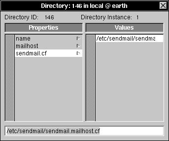 |
| Notice that on the server, a different sendmail configuration file is specified--/etc/sendmail/sendmail.mailhost.cf. Since NetInfo searches local domains first, this configuration file is used on the mail server instead of the one specified in the root domain. |
| 12. | Close the Directory window, then click exports in the domain window. |
| 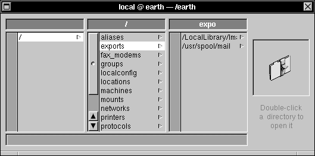 |
| Notice the subdirectories for /usr/spool/mail and /LocalLibrary/Images/People. These export the directories, making them available across the network. For more information about exporting and importing directories, see Chapter 4, "Setting Up the Network File System." |
| 13. | Exit NetInfoManager by choosing Quit from the main menu. |
| Creating Mail Aliases |
| Once you've set up the mail server and clients, you may want to create mail aliases. An alias is an alternate way to address a single user, or a way to address a group of users by a single name.
By default, mail addresses are the user names assigned to each account. However, user names are often cryptic and not easily remembered. For example, a user named Natasha Horishnikoff might have the user name nhrshnkf. Using the NetInfoManager application, you can create an alias for a user that's more readable and closer to the user's real name. For the user name nhrshnkf, you might create an alias such as Natasha_Horishnikoff or simply natasha. Important: At least one of the names of a mail alias must be all lowercase. For example, the mail alias for nhrshnkf can only include Natasha_Horishnikoff if it also has an all lowercase name, such as natasha. A mail alias can also contain more than one user. This type of alias can be thought of as a distribution list; when you send mail addressed to the alias, each member of the list receives the mail message. The members of such an alias can be user names or other mail aliases. The following procedures describe how to use NetInfoManager to create mail aliases. |
| 1. | Start up the NetInfoManager application, located in /NextAdmin. | |
| 2. | Choose Open from the Domain menu. Open the root domain by clicking / in the first column of the Select NetInfo Domain panel that appears, and then clicking the OK button. |
|
| 3. | Locate and select the /aliases directory in the domain window that appears. |
| 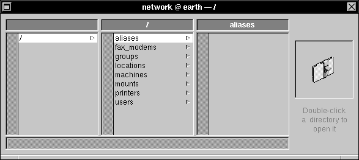 |
| 4. | To create a new alias, choose the New Subdirectory command from the Domain menu. (If you're not logged in as root, a panel may appear prompting you to enter the root password; enter the password and click Login.) A new directory named newValue appears in the aliases column; this directory will hold your new alias. |
| 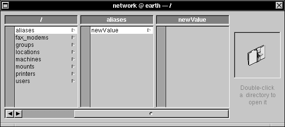 |
| 5. | Double-click newValue to open the directory window. |
| 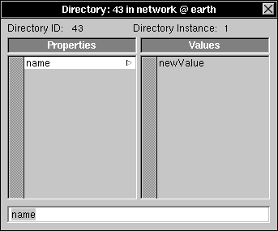 |
| 6. | Click newValue in the Values column, enter the name of the new alias you want to create, and press Return. This changes the value of the name property to the name of the new alias. | |
| Important: An alias name should contain no spaces or punctuation other than an underscore ("_") or a hyphen ("-"), as in Admin_Alias or quality-team. |
| 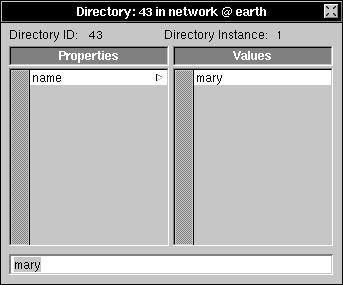 |
| 7. | If you want this alias to be known by more than one name, choose Append Value from the Directory menu and modify the result to be the additional name. Repeat for all the names of the alias. Remember, at least one value of the name property must be all lowercase. | |
| 8. | Create a new property to identify the members of the alias. Click name in the Properties column, then choose Append Property from the Directory menu. A second property with the key new_value appears in the Properties column. | |
| 9. | Change the key of the new property by entering members followed by pressing Return. |
| 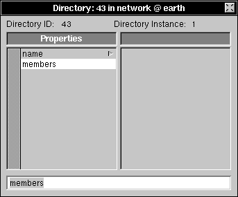 |
| The values of the members property will be the account names and aliases that will be addressed by the alias. |
| 10. | Add a new value to the members property by choosing New Value from the Directory menu. Change this value by entering the account name of the user to be addressed by this alias, followed by pressing Return. |
| 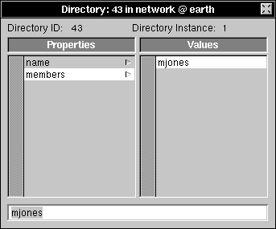 |
| 11. | If you want to create a group (distribution list) alias, you simply add additional values to the members property. Select Append Value from the Directory menu and enter the account name of the additional user followed by pressing Return. | |
| 12. | When you've finished adding account names or aliases to this alias, choose Save from the Directory menu. This adds the new alias to the NetInfo database. | |
| 13. | To update the NeXTmail application database to include all users and mail aliases currently in the NetInfo database, enter the following command in a shell window: |
 mailDBupdate
mailDBupdate
| Every time a user or mail alias is added, deleted, or modified, you must run this command to update the database. If you prefer, you can have this command run automatically by cron. See "Updating Pictures and Aliases" earlier in this chapter. |
| You can now use your new alias in any of the address fields of a mail message. When the mail system encounters the alias, the mail message will be delivered to all of the users whose account names or aliases appear as values of the members property for that alias. |
| Adding Pictures for Users |
| As described in the User's Guide, the NeXTmail application can display the picture of the sender when displaying a message. To do this, NeXTmail reads TIFF images from the directory /LocalLibrary/Images/People. To make a user's picture show up in NeXTmail, perform the following steps: |
| 1. | Obtain a 64 | |
| 2. | On the mail server, copy the image into /LocalLibrary/Images/People/user.tiff, where user is the person's user name. | |
| 3. | Make sure the picture file has read permission for everyone. | |
| 4. | Enter the following command into a shell window on the mail server: |
 mailDBupdate
mailDBupdate
| The picture will show up in the NeXTmail application next to messages from the user. In addition, the picture will be shown in the NeXTmail Addresses panel. |
| Troubleshooting |
| Troubles with mail can show up as messages not being delivered as expected, mail being returned with the message "unknown user," or the Addresses panel of the Mail application not displaying all login names or aliases. If you find yourself with one of these situations, you can check several things to verify that they're configured correctly: |
| Mail directories exported correctly--Use NFSManager to make sure that both /usr/spool/mail and /LocalLibrary/Images/People are exported to the network with read/write access. | ||
| Mail directories mounted correctly--Use NFSManager to make sure that the mount entries for both /usr/spool/mail and /LocalLibrary/Images/People are correct. The mount entries should be in the root domain, the mount point for each should be the same as the exported directory, and the server name should match the host name (or alias) of the mail server. | ||
| Correct sendmail file being used--Use NetInfoManager to verify that the root domain has a directory called /locations/sendmail with a sendmail.cf property that has the value /etc/sendmail/sendmail.sharedsubsidiary.cf. Also make sure that the local domain on the mail server has a /locations/sendmail directory with a sendmail.cf property that has a value of /etc/sendmail/sendmail.mailhost.cf. | ||
| Alias name added for mail server--Use HostManager to verify that the mail server has the host name alias mailhost. Make sure that no other host has this alias. A quick way to check is to enter nidump hosts / in a shell window. | ||
| Mail aliases are correct--Make sure that any mail aliases are stored in the root domain rather than a local domain. Check that all mail aliases have at least one value for the name property that's all lowercase letters. A quick way to check is to enter niutil -list / /aliases in a shell window. |
| To get more detailed information when you're diagnosing mail problems, you can use the verbose option to mail: |
| 1. | Log into a computer other than the mail server and enter the following command in a shell window: |
 mail -v me
mail -v me
| 2. | Enter a subject when prompted, then enter a short message and press Return. | |
| 3. | Type a period (".") on a line by itself and press Return. You see some messages about the mail delivery that should look something like the following: |
 me... Connecting to mailhost via etherl...
me... Connecting to mailhost via etherl...
 Trying 192.42.72.3... connected.
Trying 192.42.72.3... connected.
 220 mailhost Sendmail NeXT-1.0 (From Sendmail 5.52)/NeXT0.1-Aleph-bf ready at Thu, 23 Jan 92 11:37:36 PST
220 mailhost Sendmail NeXT-1.0 (From Sendmail 5.52)/NeXT0.1-Aleph-bf ready at Thu, 23 Jan 92 11:37:36 PST
 >>> HELLO myhost
>>> HELLO myhost
 250 mailhost Hello myhost, pleased to meet you
250 mailhost Hello myhost, pleased to meet you
 >>> MAIL From:<me>
>>> MAIL From:<me>
 250 <me>... Sender ok
250 <me>... Sender ok
 >>> RCPT To:<me>
>>> RCPT To:<me>
 250 <me>... Recipient ok
250 <me>... Recipient ok
 >>> DATA
>>> DATA
 354 Enter mail, end with "." on a line by itself
354 Enter mail, end with "." on a line by itself
 >>> .
>>> .
 250 Mail accepted
250 Mail accepted
 >>> QUIT
>>> QUIT
 221 mailhost delivering mail
221 mailhost delivering mail
| Notice the line that includes "Connecting to mailhost via etherl." If you see a message that ends with "via local," you know that the mail server isn't being recognized by this computer. Verify that the mailhost alias is stored correctly and double-check the sendmail configuration file information. |
| If mail seems to be delivered correctly from a mail client, try the same command on the mail server: |
| 1. | Log into the mail server and enter the following command in a shell window: |
 mail -v me
mail -v me
| 2. | Enter a subject when prompted, then enter a short message and press Return. | |
| 3. | Type a period (".") on a line by itself and press Return. You see some messages about the mail delivery that should look something like the following: |
 me... Connecting to via local...
me... Connecting to via local...
 me... Sent
me... Sent
| If you don't see similar messages, check the /locations/sendmail directory in the local domain of the mail server. |
| More troubleshooting information about sendmail configuration files can be found in Appendix D, "The sendmail Program." |